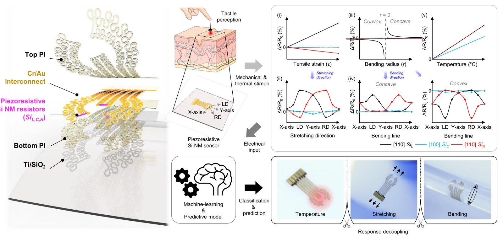
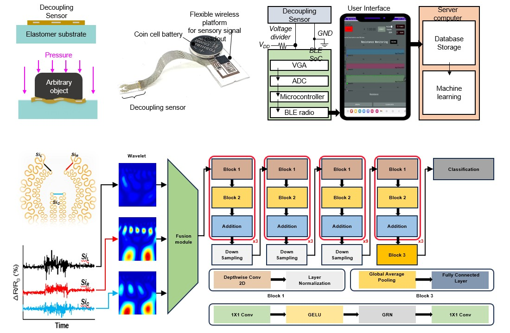
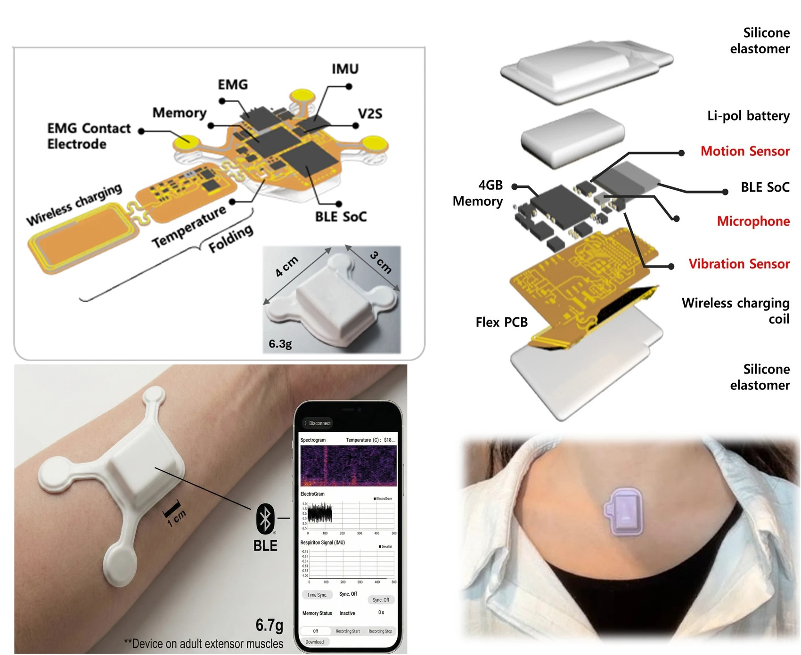
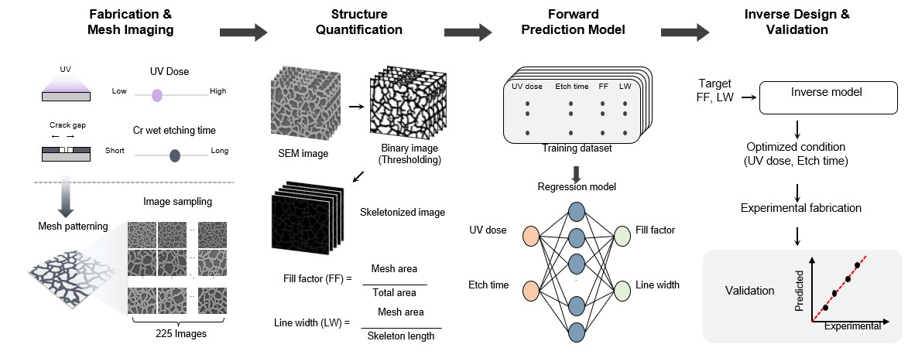
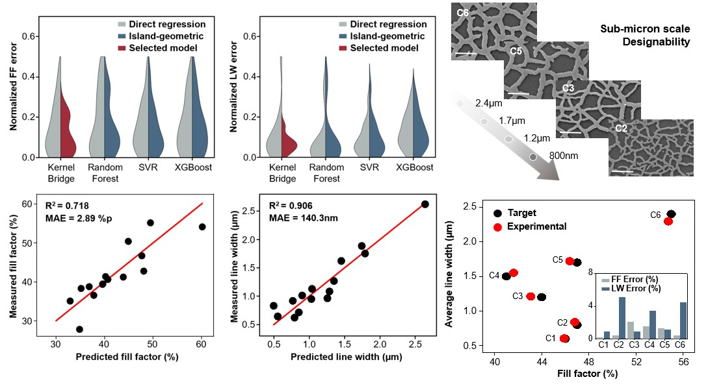

M.S. Student, Department of AI Systems Engineering
Sungkyunkwan University · Advisor: Prof. Sangmin Won (원상민 교수님)
센서 데이터 수집부터 전처리·모델 개발·검증까지 수행하는 인공지능시스템공학 석사과정입니다. nRF52 펌웨어·BLE·모바일 앱으로 측정 시스템을 구현하고, 의료 신호와 반도체 공정 데이터에서 예측 구조를 개선하며 데이터 정의와 평가 기준을 점검해 왔습니다.
저는 성균관대학교 인공지능시스템공학 석사과정(유연전자소재연구실)으로, 센서 데이터 수집부터 전처리·모델 개발·검증까지 수행합니다. 컴퓨터공학을 전공하며 쌓은 소프트웨어·AI 역량을 바탕으로 멀티모달 센싱, 의료 신호 분석, 반도체 공정 결과 예측을 다루고 있습니다.
센서 소자와 시편은 하드웨어 팀이 제작하고, 저는 nRF52 펌웨어·BLE·Android/iOS 앱, 데이터 분석·전처리, 모델 개발·평가, 실시간 시스템 시연을 담당합니다. 레이블 점검, 환자 단위·측정일 단위 분리 검증처럼 데이터 정의와 평가 기준을 점검하는 일을 중요하게 생각합니다.
현재 진행 중인 연구는 크게 세 갈래입니다: 촉각 인식을 위한 멀티모달 센싱 플랫폼, 파킨슨병·삼킴장애 모니터링을 위한 웨어러블 디지털 헬스케어 시스템, 그리고 반도체 공정조건을 예측·역설계하는 AI 기반 공정 최적화 프레임워크입니다.
nRF52832 기반 센서 구동 · 무선 전송 · 디버깅을 직접 개발하고, 센서에서 모바일 앱과 AI 분석까지 전 구간을 연결했습니다.
센서 하드웨어, 임베디드 시스템, AI 모델링을 아우르는 세 가지 핵심 연구입니다.

Hardware-level decoupling of tensile strain, bending, and temperature via piezoresistive Si-NM sensors, followed by AI-based classification.
Hardware-level Decoupling, Wireless System, and AI-based Recognition
Science Advances in press (2026)

Flexible wireless readout platform (BLE SoC) and a wavelet-fusion deep learning pipeline for multimodal signal classification.
Sensor → Firmware/BLE → Server → Machine Learning

Miniaturized wearable devices (6.3–6.7 g) integrating EMG, IMU, microphone, and vibration sensors with BLE connectivity.
Multimodal Biosensing, Wearable System, and AI-based Clinical Assessment
성균관대 유연전자소재연구실·삼성서울병원 공동연구 진행 중 · 파킨슨병 데이터 수집 및 분석·모델 개발 진행 중

Forward regression model (UV dose, etch time → fill factor, line width) and AI-based inverse process design with experimental validation.
Process Modeling, Inverse Prediction, and AI-based Optimization

Kernel Ridge regression selected as the final model; six new process conditions (C1–C6) fabricated by the hardware team and jointly validated against targets.
Forward model 기반 inverse search + experimental validation
논문 2편(Science Advances in press, ACS Applied Optical Materials)과 특허 출원 내역입니다.
스트레인·굽힘·온도 자극을 센서 수준에서 분리하는 멀티모달 센싱 연구입니다. 담당 기여: 펌웨어·BLE·모바일 앱, 데이터 처리·모델 평가, 실시간 시스템 시연.